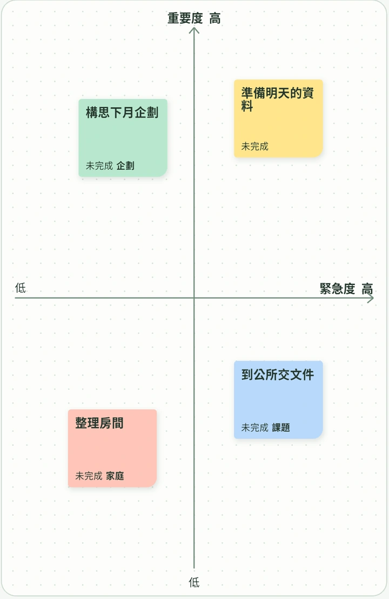
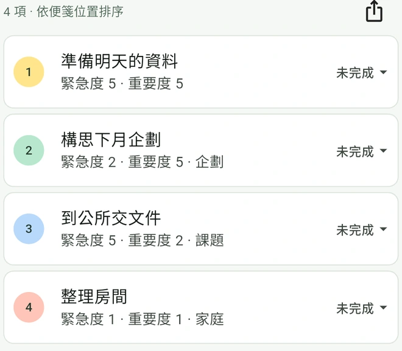

貼上便利貼，決定下一步做什麼
-
寫下要做的事
例如「準備明天的資料」。腦中想到的事，一件寫在一張便利貼上。
-
緊急的往右放，重要的往上放
明天要用的資料可以放在右上方，下個月的重要企劃還有時間，可以放在左上方。把便利貼放在一起比較，再調整位置。
-
從清單最上面開始做
打開待辦清單，就能看到依便利貼位置排好的順序。開始處理或做完時，可以直接更新進度。

計畫有變，移一下便利貼
例如，簡報提前到明天。把「完成簡報資料」的便利貼往右拖曳，待辦清單就會把它排到「送出報價」前面。便利貼只要寫一次，清單順序會自動更新。
原本的待辦順序
- 送出報價
- 完成簡報資料
移動便利貼後
- 完成簡報資料
- 送出報價
工作、生活和學習都用得到
-
工作
把快到期的簡報和想提早準備的企劃放在一起比較。
-
生活
排一排今天要辦的手續和週末的採買。
-
學習
把明天要交的作業和想留時間做的考試準備放在一起。
常見問題
PetaTodo 可以免費使用嗎？
iPhone、iPad 和 Android 版都可免費使用，不需註冊帳號。App 內可能會顯示廣告。
待辦事項的優先順序是怎麼排的？
App 依便利貼的位置，把緊急度與重要度各換算成 1 到 5 分，再依總分從高到低排列。總分相同時先看重要度，重要度也相同就按建立時間排序。
做完的便利貼會去哪裡？
標記為已完成後，便利貼會從看板移到待辦清單的已完成區。把狀態改回未完成或進行中，便利貼會回到原本的位置。
便利貼越來越多，怎麼整理？
可以擴大看板，便利貼會維持原本的大小。也能用顏色和標籤分類、依標籤篩選。每張便利貼都支援有格式的備註與多個附件。
可以分享看板和待辦清單嗎？
看板可以儲存或分享為 PDF、PNG，待辦清單可以儲存或分享為 CSV、PDF、PNG。也可以將待辦清單複製成文字、CSV 或圖片。
便利貼和附件儲存在哪裡？
看板、便利貼和附件儲存在裝置內，PetaTodo 不會將這些內容上傳至外部伺服器。